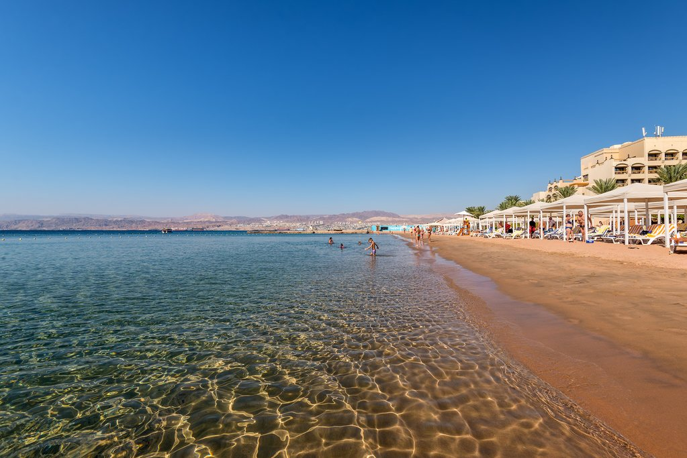

<!DOCTYPE html>
<html>
</html>
<head>
    <title> visit-Jordan</title>
</head>
<body>
    <header>
        
    </header>
    <main>
        <h1>Aqaba</h1> 
        
<p >Situated on the southern tip of Jordan, approximately 4 hours from the capital of Amman, Aqaba is a beach town with Jordanian appeal. Equipped with the local watering holes, to water sports, and a historical flair for those looking to revisit the past Aqaba is a delightful complement to the metropolitan appeal of Amman
    Aqaba is a Jordanian port city on the Red Sea's Gulf of Aqaba. Inhabited since 4000 B.C., it's home to the Islamic-era Aqaba Fort. Its beach resorts are popular for windsurfing and other water sports, and the area is a top destination for scuba divers, with notable dive sites including the Yamanieh coral reef in the Aqaba Marine Park, south of the city

</p>

<ul>
    <li>Home</li>
    <li>Wadi-Rum</li>
    <li>Petra</li>
</ul>
    </main>
    <footer>
&copy;Done by Israa Ireqat ASAC at LTUC
    </footer>
</body>